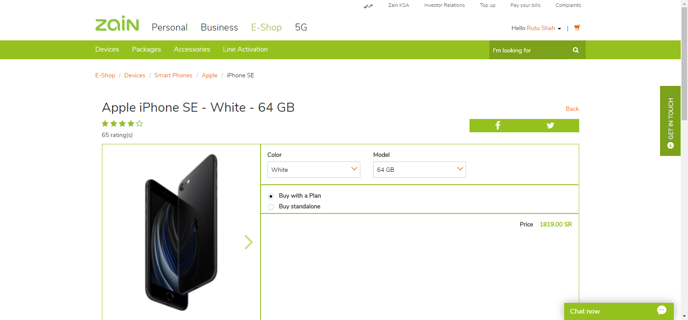
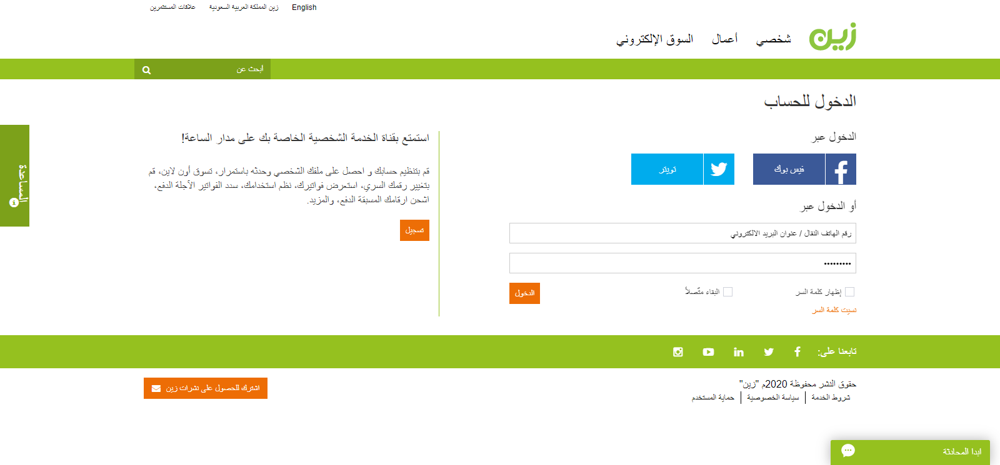
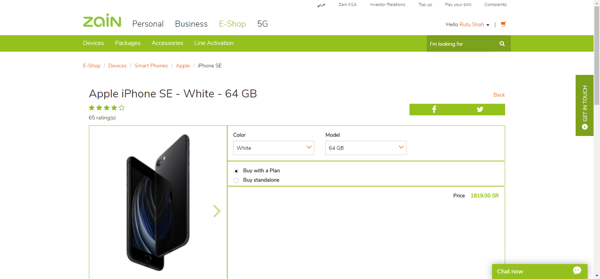
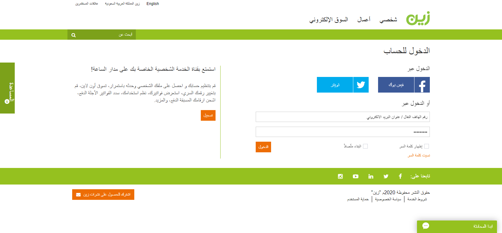

com.Zain.ZainIndex
com.Zain.ZainIndex
verifyLogin_Dashboard_Price
(voicetest290@gmail.com, rutu@123)
java.lang.AssertionError: Test Verification failed, please check test logs.
at org.testng.Assert.fail(Assert.java:99)
at com.Zain.ZainIndex.verifyLogin_Dashboard_Price(ZainIndex.java:151)
at sun.reflect.NativeMethodAccessorImpl.invoke0(Native Method)
at sun.reflect.NativeMethodAccessorImpl.invoke(NativeMethodAccessorImpl.java:62)
at sun.reflect.DelegatingMethodAccessorImpl.invoke(DelegatingMethodAccessorImpl.java:43)
at java.lang.reflect.Method.invoke(Method.java:498)
at org.testng.internal.MethodInvocationHelper.invokeMethod(MethodInvocationHelper.java:132)
at org.testng.internal.TestInvoker.invokeMethod(TestInvoker.java:599)
at org.testng.internal.TestInvoker.invokeTestMethod(TestInvoker.java:174)
at org.testng.internal.MethodRunner.runInSequence(MethodRunner.java:46)
at org.testng.internal.TestInvoker$MethodInvocationAgent.invoke(TestInvoker.java:822)
at org.testng.internal.TestInvoker.invokeTestMethods(TestInvoker.java:147)
at org.testng.internal.TestMethodWorker.invokeTestMethods(TestMethodWorker.java:146)
at org.testng.internal.TestMethodWorker.run(TestMethodWorker.java:128)
at java.util.ArrayList.forEach(ArrayList.java:1259)
at org.testng.TestRunner.privateRun(TestRunner.java:764)
at org.testng.TestRunner.run(TestRunner.java:585)
at org.testng.SuiteRunner.runTest(SuiteRunner.java:384)
at org.testng.SuiteRunner.runSequentially(SuiteRunner.java:378)
at org.testng.SuiteRunner.privateRun(SuiteRunner.java:337)
at org.testng.SuiteRunner.run(SuiteRunner.java:286)
at org.testng.SuiteRunnerWorker.runSuite(SuiteRunnerWorker.java:53)
at org.testng.SuiteRunnerWorker.run(SuiteRunnerWorker.java:96)
at org.testng.TestNG.runSuitesSequentially(TestNG.java:1218)
at org.testng.TestNG.runSuitesLocally(TestNG.java:1140)
at org.testng.TestNG.runSuites(TestNG.java:1069)
at org.testng.TestNG.run(TestNG.java:1037)
at com.intellij.rt.testng.IDEARemoteTestNG.run(IDEARemoteTestNG.java:66)
at com.intellij.rt.testng.RemoteTestNGStarter.main(RemoteTestNGStarter.java:110)
E:\TBLOCKS_WEB_POC\Zain.xml
<?xml version="1.0" encoding="UTF-8"?>
<!DOCTYPE suite SYSTEM "https://testng.org/testng-1.0.dtd">
<suite thread-count="1" guice-stage="DEVELOPMENT" verbose="10" name="TBlocks_POC_Zain_WebApplication">
<listeners>
<listener class-name="com.framework.utility.CustomDetailReporter"/>
<listener class-name="com.framework.utility.CustomReporterEmailBuildSummary"/>
<listener class-name="com.framework.utility.CustomReporterforEmail"/>
<listener class-name="com.framework.utility.CustomReporterListener"/>
</listeners>
<test thread-count="1" verbose="10" name="ZainIndex_TS_WEB_001 :: To perform login, verify Dashboard and Add device from E-Shop and price verification.">
<classes>
<class name="com.Zain.ZainIndex">
<methods>
<include name="verifyLogin_Dashboard_Price"/>
</methods>
</class> <!-- com.Zain.ZainIndex -->
</classes>
</test> <!-- ZainIndex_TS_WEB_001 :: To perform login, verify Dashboard and Add device from E-Shop and price verification. -->
</suite> <!-- TBlocks_POC_Zain_WebApplication -->
Tests for TBlocks_POC_Zain_WebApplication
- ZainIndex_TS_WEB_001 :: To perform login, verify Dashboard and Add device from E-Shop and price verification. (1 class)
Groups for TBlocks_POC_Zain_WebApplication
Times for TBlocks_POC_Zain_WebApplication
Total running time: 1 minutes
Reporter output for TBlocks_POC_Zain_WebApplication
verifyLogin_Dashboard_Price(voicetest290@gmail.com, rutu@123)
TS_WEB_001 :: To perform login, verify Dashboard and Add device from E-Shop and price verification.
 Version is not available for the current build.
Version is not available for the current build.
To verify that user can see the home page of the " Zain Web Application " .
 Pass
Pass
Step 1 : Click on My Zain Account button from the top right corner of the web application.
Verify that user can see " Login Screen " of zain web application with following fields.
1. Zain Logo
2. Login Panel
3. Register Panel
4. Personal Tab
5. Business Tab.
6. E-Shop Tab.
7. I am looking for Search field.
8. Follow us Icons
9. Footer Text
10. Header Hyperlinks
Pass
Step 2 : Enter Credentials for login.
Email Address : voicetest290@gmail.com
Step 3 : Click on Sign in button.
Verify user is directed to the dashboard screen after successful login and verify following details.
1. Logged in user name
2. Add to cart button
3. Zain Logo
4. Personal Tab
5. Business Tab
6. E-Shop Tab
7. 5G Tab
9. I am looking for Search field.
10. Profile Picture of user.
11. Name
12. Nickname
Logged in User Name : : Rutu Shah
Logged in User's NickName : : Rutu
Pass
Step 4 : Click on E-Shop Tab.
Verify user can see E-Shop Screen's content.
Total Available Products : : 5
Pass
Step 5 : Click on First available product.
Verify selected product screen.
Pass
Step 6 : Observe and click on the first thumbnail.
Verify user can see information page of the thumbnail.
Pass
Verify select Iphone SE with black color and model number
Currently selected Mobile Color : : White
Currently selected Mobile Model : 64 GB
Currently selected Mobile price : 1819.00
Step Failure
Please check attached screenshot :
: 
 Fail
Fail
Step 7 : Click on user name
Step 8 : Click on Logout.
Verify the user is logout successfully.
Pass
Step Failure
Please check attached screenshot :
: 
Fail
Failure Reason: :
 Validation Message : java.lang.AssertionError: Test Verification failed, please check test logs.
Validation Message : java.lang.AssertionError: Test Verification failed, please check test logs.
TS_WEB_001 :: To perform login, verify Dashboard and Add device from E-Shop and price verification.
Step 1 : Click on My Zain Account button from the top right corner of the web application.
1. Zain Logo
2. Login Panel
3. Register Panel
4. Personal Tab
5. Business Tab.
6. E-Shop Tab.
7. I am looking for Search field.
8. Follow us Icons
9. Footer Text
10. Header Hyperlinks
Step 2 : Enter Credentials for login.
Email Address : voicetest290@gmail.com
Step 3 : Click on Sign in button.
1. Logged in user name
2. Add to cart button
3. Zain Logo
4. Personal Tab
5. Business Tab
6. E-Shop Tab
7. 5G Tab
9. I am looking for Search field.
10. Profile Picture of user.
11. Name
12. Nickname
Logged in User Name : : Rutu Shah
Logged in User's NickName : : Rutu
Step 4 : Click on E-Shop Tab.
Total Available Products : : 5
Step 5 : Click on First available product.
Step 6 : Observe and click on the first thumbnail.
Currently selected Mobile Color : : White
Step Failure
Please check attached screenshot :
: 
Step 7 : Click on user name
Step 8 : Click on Logout.
Step Failure
Please check attached screenshot :
: 
Failure Reason: :
1 ignored method
com.Zain.ZainIndex
test2
Methods in chronological order
com.Zain.ZainIndex
startReport(org.testng.TestRunner@29ea78b1)
0 ms
setUp(public void com.Zain.ZainIndex.verifyLogin_Dashboard_Price(java.lang.String,java.lang.String) throws...)
271 ms
verifyLogin_Dashboard_Price(voicetest290@gmail.com, rutu@123)
15496 ms
tearDown([TestResult name=verifyLogin_Dashboard_Price status=FAILURE method=ZainIndex.verifyLogin_Dashboard_P...)
88376 ms
endReport
90208 ms